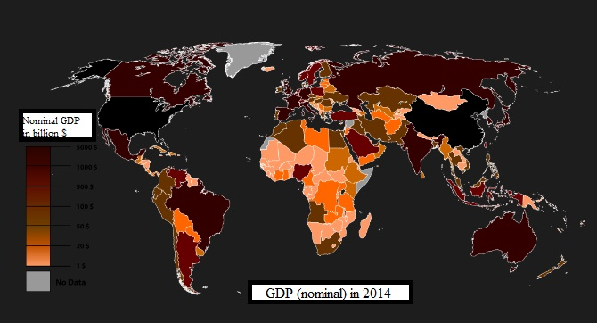

Financial news for a beta public
GDP: What is that exactly? Gross domestic product (GDP) is a monetary measure of the market value of all final goods and services produced in a period (quarterly or yearly) of time. Nominal GDP estimates are commonly used to determine the economic performance of a whole country or region, and to make international comparisons. Nominal GDP per capita does not, however, reflect differences in the cost of living and the inflation rates of the countries; therefore using a basis of GDP per capita at purchasing power parity (PPP) is arguably more useful when comparing differences in living standards between nations.
William Petty came up with a basic concept of GDP to defend landlords against unfair taxation during warfare between the Dutch and the English between 1652 and 1674. Charles Davenant developed the method further in 1695. The modern concept of GDP was first developed by Simon Kuznets for a US Congress report in 1934. In this report, Kuznets warned against its use as a measure of welfare (see below under limitations and criticisms). After the Bretton Woods conference in 1944, GDP became the main tool for measuring a country's economy. At that time gross national product (GNP) was the preferred estimate, which differed from GDP in that it measured production by a country's citizens at home and abroad rather than its 'resident institutional units' (see OECD definition above). The switch from "GNP" to "GDP" in the US was in 1991, trailing behind most other nations. Crucial to the development of GDP was its role in the wartime effort. A crucial role was played here by the US Department of Commerce under Milton Gilbert where ideas from Kuznets were embedded into governmental institutions.
GDP can be determined in three ways, all of which should, in principle, give the same result. They are the production (or output or value added) approach, the income approach, or the expenditure approach. The last approach calculates the sum of the final uses of goods and services (all uses except intermediate consumption) measured in purchasers' prices. The GDP is a monetary measure of the market value of all final goods and services produced in a period of time In this case GDP (Y) is: Y = C + I + G + (X − M), where C is the private consumption, I the private investment, G the government consumption, X the exports and M the imports. Sources: http://databank.worldbank.org/data/home.aspx, https://en.wikipedia.org/wiki/Gross_domestic_product